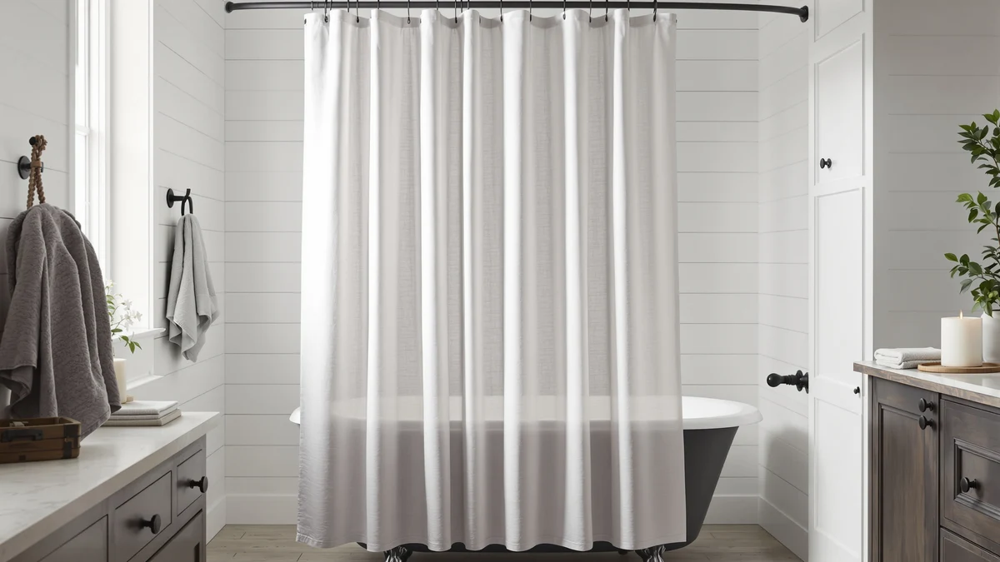

Quick Answer
For most bathrooms, buy the Linen Shower Curtain Flax Tan ($27.99), our top pick among the best linen shower curtain liners we compared. Its linen-textured face fabric is bonded to a Polyester/PEVA layer, so it hangs as one waterproof panel instead of a curtain plus a separate liner, and it carries a 4.3-star rating across 144 verified reviews. If you want a pattern instead of a solid neutral, the Blgiont Farmhouse Blue Floral Shower and five other farmhouse-style picks below use the same PEVA-backed construction.
Our pick: Linen Shower Curtain Flax Tan, $27.99 Check Price on Amazon
Things to Know Before You Buy
- A linen shower curtain liner in this guide is not a separate plastic sheet. Every pick pairs a linen-look face fabric with a Polyester/PEVA backing, so the liner function is built into the one panel you hang.
- All seven picks ship in the standard 72-inch width. If your alcove or stall is wider, you will need a wider curtain or an extra-wide option instead, since none of these run larger.
- PEVA-backed fabric resists water better than plain woven linen, but it still needs the same care as any shower curtain: regular washing to stop soap scum and mildew from building up along the hem.
- Only one pick, the Linen Shower Curtain Flax Tan, has a public star rating and review count. The rest are newer listings without that track record yet, which we flag in each product's drawbacks.
- Pattern and color vary more than construction here. Every curtain uses the same Polyester/PEVA material, so the real decision is which farmhouse print or neutral tone fits your bathroom.
The best linen shower curtain liners solve a problem most shoppers do not notice until they are standing in the shower aisle: a linen curtain looks good but does not stop water on its own, and a plastic liner stops water but looks like a plastic liner. The seven picks in this guide close that gap by pairing a linen-textured face fabric with a Polyester/PEVA backing, so you hang one curtain instead of buying a decorative layer and a separate liner to go behind it.
We researched linen-look shower curtains built this way and compared them on price, size, pattern, and the verified owner reviews that exist for each listing. The Linen Shower Curtain Flax Tan is the clear pick for most bathrooms: at $27.99 it carries a 4.3-star rating across 144 reviews, the only product here with a public track record to point to.
If a solid neutral is not what your bathroom needs, the other six picks use the same PEVA-backed construction in farmhouse florals, stripes, and ruffled hems, from the $19.98 Blgiont Farmhouse Blue Floral Shower up to the $28.99 XOGUIBO Farmhouse Shower Curtain and Farmhouse Shower Curtain Ruffle Linen. We compared each one on the same criteria so you can match pattern to bathroom without guessing at construction quality.
Why You Should Trust Us
We are a research-based review site, not a testing lab, and we do not pretend otherwise. Author Ilane Tall and the team behind Best Shower Curtains research the linen shower curtain liners shoppers actually search for, then compare listed materials, sizes, prices, and public Amazon ratings against each other rather than guessing at quality from a product photo.
Every claim in this guide ties back to something you can verify on the product listing itself: the Polyester/PEVA material, the 72-inch size, the price at the time of publishing, and the 4.3-star, 144-review track record behind our top pick. We earn a commission if you buy through our links, but that has no bearing on which curtain we name our pick.
How We Picked
To build this list of the best linen shower curtain liners, we started by pulling the linen-look shower curtains that also list a PEVA or waterproof backing, since a linen curtain liner needs both qualities to earn a spot here. That immediately ruled out pure linen curtains with no liner layer and plain PEVA liners with no linen texture, both of which we cover separately in our linen curtain and PEVA liner guides.
From the remaining field we weighed three things. First, construction honesty: the material field had to list Polyester/PEVA rather than a linen-style print on plain vinyl. Second, size fit: every pick had to match the standard 72-inch width most tubs and stalls use. Third, track record: where a public star rating and review count exist, we weighted that over pattern alone, which is why the Flax Tan leads this guide.
How We Compared
We compared the seven linen shower curtain liners in this guide side by side on their listed specs: material, size, price, and any public rating and review count Amazon shows for the listing. Where a curtain lacked a public rating, we noted that gap directly instead of filling it with a guess, which is why the Flax Tan stands out as the only pick with a verified 4.3-star, 144-review history.
We also compared pattern and finish against price, since all seven share the same Polyester/PEVA construction. A $19.98 floral print and a $28.99 ruffled panel are built the same way underneath, so the price difference in this lineup comes down to print complexity and hem detail, not liner quality. None of this produces a numeric score, and we do not give one. It produces a direct answer for each pick: who should buy it.
Our Picks
These are the seven best linen shower curtain liners we compared, led by the Flax Tan and followed by six farmhouse-style alternatives built the same way.

Linen Shower Curtain Flax Tan
What we like
- Linen-look weave in a neutral Flax Tan that fits most bathroom color schemes
- Polyester/PEVA build means the liner layer is already part of the curtain
- Backed by 144 verified reviews at 4.3 stars, the strongest track record in this guide
- Standard 72x72 size fits most tubs and stalls without trimming
Flaws but not dealbreakers
- Only one colorway, so you cannot match it to a specific farmhouse print
- Fixed 72x72 size, no longer-drop option for taller showers
- At $27.99, it costs more than the Blgiont floral or Beige linen picks below
| Material | Polyester / PEVA |
| Size | 72x72 |
The Flax Tan earns the top spot because it does the one thing this whole category promises: a linen-look curtain that also functions as its own liner. The Polyester/PEVA weave gives you the texture of a woven linen panel on the face, backed by a waterproof layer that would otherwise require a second product hung behind it. Reviewers consistently note that the tan tone reads as a warm neutral rather than a stark white, which likely helps explain why it has more reviews than every other pick in this guide.
At $27.99, it costs more than the plainer Beige option and the Blgiont floral, but it is the only pick here with a real number behind it: 144 verified reviews averaging 4.3 stars. That track record matters more than a lower price when you are buying something that has to keep water off your floor every day. The tradeoff is choice. You get one color and one size, so shoppers who want a specific farmhouse print should look at the picks below instead.

Blgiont Farmhouse Blue Floral Shower
What we like
- Blue floral farmhouse print offers pattern where the Flax Tan is solid
- Same Polyester/PEVA build, so the liner function is still built in
- At $19.98, the least expensive pick in this guide
- Standard 72-inch pack of one fits most standard tubs and stalls
Flaws but not dealbreakers
- No published rating or review count as of publishing
- Floral print will not suit a minimalist or neutral bathroom
- Fixed 72x72 size only, no extra-long version
| Material | Polyester / PEVA |
| Size | 72"W x 72"L (Pack of 1) |
The Blgiont is the runner-up for shoppers who want the same PEVA-backed construction as the Flax Tan but in a farmhouse floral print instead of a solid neutral. The blue floral pattern sits on the same linen-look weave, so you are choosing a busier look for the bathroom rather than trading away construction quality.
At $19.98, it undercuts the Flax Tan by nearly eight dollars, which makes it the value option if pattern matters more to you than a proven review history. We could not find a public rating or review count for this listing as of publishing, so treat the track record as unproven compared with our top pick. If the price and the print both work for your bathroom, it is a reasonable way into this category for less.

XOGUIBO Farmhouse Shower Curtain with
What we like
- Farmhouse weave reads as heavier and more textured than the Flax Tan or Blgiont
- Polyester/PEVA backing keeps the built-in liner function
- Full 72x72 size covers most standard tub and stall widths
- Neutral farmhouse styling pairs with rustic or cottage decor
Flaws but not dealbreakers
- No published rating or review count as of publishing
- At $28.99, the joint most expensive pick in this guide
- Heavier-looking weave may not suit a more modern bathroom
| Material | Polyester / PEVA |
| Size | 72"W x 72"L |
The XOGUIBO Farmhouse Shower Curtain leans into a heavier, more textured weave than the Flax Tan or Blgiont, which suits a rustic or cottage-style bathroom that wants more visual weight from its curtain. It uses the same Polyester/PEVA construction as the rest of this guide, so the liner is still built into the single panel.
At $28.99, it sits at the top of the price range here alongside the Ruffle Linen pick, and we could not find a public rating or review count for the listing as of publishing. If the heavier farmhouse texture is what your bathroom is missing and you are comfortable buying without a review history to lean on, it is a reasonable choice. If a proven track record matters more, the Flax Tan remains the safer bet.

Farmhouse Striped Shower Curtain Taupe
What we like
- Taupe stripe pattern adds subtle detail without a busy print
- Polyester/PEVA build keeps the same built-in liner function as pricier picks
- At $24.99, one of the cheaper options in this guide
- Neutral taupe tone works with most bathroom color schemes
Flaws but not dealbreakers
- No published rating or review count as of publishing
- Subtle stripe may read as plain next to the floral or ruffled picks
- Standard 72x72 size only
| Material | Polyester / PEVA |
| Size | 72"W x 72"L |
The Farmhouse Striped Shower Curtain Taupe is the budget pick for shoppers who want the linen-look, PEVA-backed combo without paying close to $30 for it. The taupe stripe gives the panel a bit more visual texture than a flat solid, while staying neutral enough to fit most bathroom color schemes.
At $24.99 it undercuts three of the four higher-priced farmhouse picks in this guide, and the construction underneath the print is identical: Polyester/PEVA in the standard 72x72 size. We could not find a public rating or review count for the listing as of publishing, so this is a price-driven pick rather than a track-record pick. If the taupe stripe suits your bathroom, it is the easiest way into this category for less than $25.

Farmhouse Shower Curtain Ruffle Linen
What we like
- Ruffled hem detail stands out from the flat-hem picks elsewhere in this guide
- Same Polyester/PEVA build keeps the liner function built in
- Cottagecore styling suits a farmhouse or vintage-inspired bathroom
- Standard 72x72 size fits most tubs and stalls
Flaws but not dealbreakers
- No published rating or review count as of publishing
- Ruffled hem may collect more soap residue than a flat edge
- At $28.99, tied for the most expensive pick in this guide
| Material | Polyester / PEVA |
| Size | 72"W x 72"L |
The Farmhouse Shower Curtain Ruffle Linen adds a ruffled hem to the same linen-look face and PEVA backing used across this guide, which makes it the pick for anyone leaning into a cottagecore or vintage farmhouse look rather than a plain woven texture. The ruffle sits along the bottom edge, giving the panel more visual movement than the flat-hem picks around it.
At $28.99, it costs the same as the XOGUIBO Farmhouse pick and more than the Flax Tan, Blgiont, or Taupe options, and we could not find a public rating or review count for the listing as of publishing. The ruffle detail also means slightly more fabric folds near the hem, which can collect a bit more soap residue over time than a flat edge. If the ruffled look is the reason you are shopping this category, it is the only pick here that offers it.

CasaTena Farmhouse Striped Shower Curtain
What we like
- Wider, bolder stripe than the Taupe pick for more visual contrast
- Polyester/PEVA build keeps the liner function built into the panel
- Farmhouse styling suits rustic or cottage-style bathrooms
- Standard 72-inch pack of one fits most tubs and stalls
Flaws but not dealbreakers
- No published rating or review count as of publishing
- Bolder stripe will not suit a bathroom that wants a subtle, neutral look
- At $26.99, priced above the Taupe and Beige picks
| Material | Polyester / PEVA |
| Size | 72"W x 72"L (Pack of 1) |
The CasaTena Farmhouse Striped Shower Curtain uses a wider, more contrasted stripe than the Taupe pick above, so it reads as a bolder pattern choice rather than a subtle texture. Underneath the print, it shares the same Polyester/PEVA construction as the rest of this guide, so the liner function is still built into the single panel.
At $26.99, it sits between the Taupe budget pick and the pricier ruffled and XOGUIBO options, and we could not find a public rating or review count for the listing as of publishing. Choose this over the Taupe if you want the stripe pattern to stand out from across the bathroom rather than blend into the wall color.

Farmhouse Shower Curtain Linen Beige
What we like
- Plain beige linen look works in almost any bathroom color scheme
- Polyester/PEVA build keeps the same built-in liner function as pricier picks
- At $22.98, one of the two cheapest options in this guide
- Standard 72x72 size fits most tubs and stalls
Flaws but not dealbreakers
- No published rating or review count as of publishing
- Plain beige has less visual interest than the striped or floral picks
- Only one colorway available
| Material | Polyester / PEVA |
| Size | 72"W x 72"L |
The Farmhouse Shower Curtain Linen Beige is the plainest option in this guide, a solid beige linen-look panel with no stripe, floral, or ruffle detail competing for attention. That makes it an easy match for a bathroom where you want the linen texture without adding a pattern to think about.
At $22.98, it costs less than every pick except the Blgiont floral, while sharing the same Polyester/PEVA construction as the pricier options above. We could not find a public rating or review count for the listing as of publishing. If plain and neutral is what you are after, this is the cheapest way to get the linen-look, PEVA-backed combo without a pattern.
Quick Comparison
A side-by-side look at how the best linen shower curtain liners in this guide compare on material, price, and rating.
| Product | Material | Price | Rating | Best for | Get it |
|---|---|---|---|---|---|
| Linen Shower Curtain Flax Tan | Polyester / PEVA | $27.99 | 4.3 | Most bathrooms | View on Amazon → |
| Blgiont Farmhouse Blue Floral Shower | Polyester / PEVA | $19.98 | 4 | Floral farmhouse look | View on Amazon → |
| XOGUIBO Farmhouse Shower Curtain with | Polyester / PEVA | $28.99 | 4 | Heavier woven texture | View on Amazon → |
| Farmhouse Striped Shower Curtain Taupe | Polyester / PEVA | $24.99 | 4 | Budget shoppers | View on Amazon → |
| Farmhouse Shower Curtain Ruffle Linen | Polyester / PEVA | $28.99 | 4 | Ruffled hem detail | View on Amazon → |
| CasaTena Farmhouse Striped Shower Curtain | Polyester / PEVA | $26.99 | 4 | Bolder stripe pattern | View on Amazon → |
| Farmhouse Shower Curtain Linen Beige | Polyester / PEVA | $22.98 | 4 | Plainest, lowest price | View on Amazon → |
Across all seven of the best linen shower curtain liners we compared, the Linen brand's Flax Tan curtain stays our top pick. It is the only one with a verified rating and review count behind it, and at $27.99 it costs less than three of the six farmhouse alternatives that share the same Polyester/PEVA construction.
The Competition
We left pure linen curtains with no waterproof backing out of this guide on purpose. Real woven linen without a PEVA layer needs a separate liner behind it, which defeats the point of a linen shower curtain liner. If true linen texture matters more to you than the built-in liner function, our best linen shower curtains guide covers those options and the standalone liners to pair with them.
We also passed on plain PEVA and vinyl liners with no linen-style texture at all. They handle the waterproofing job on their own, but they look like what they are: a plastic sheet, not a curtain you would want facing the room. Shoppers who only need the waterproofing, without the linen look, should check our PEVA shower curtain liner picks instead.
Finally, we skipped farmhouse-style curtains that use a plain vinyl or PVC backing rather than PEVA. PVC liners are heavier and less flexible, and several listings blur the line between the two materials in their titles. Every pick in this guide lists Polyester/PEVA specifically, which is the lighter, more common liner material in this category.
Frequently Asked Questions
Do linen shower curtain liners need a separate liner behind them?
No, not with the picks in this guide. Each one pairs a linen-look face fabric with a Polyester/PEVA backing, so the waterproof layer is already built into the panel. You hang one curtain instead of a decorative layer plus a separate plastic liner.
How do you clean a linen shower curtain liner?
Machine wash on a cold, gentle cycle and skip the fabric softener, which can break down the PEVA backing over time. Hang the curtain back on the rod while it is still damp so the linen-look weave dries without deep creases.
Are linen-look PEVA liners as durable as a separate cotton curtain and liner?
For most bathrooms, yes. Owners of the Linen Shower Curtain Flax Tan report steady use across 144 verified reviews at 4.3 stars, a track record in line with what a standalone cotton curtain and PEVA liner combination would need two products to achieve.